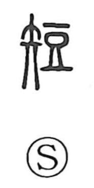

短

Uncategorized
Kun: mijikai | On: tan
short ・ low ・ to fall short ・ shortcoming
Explanation
短 is a phono-semantic character that combines 矢, an arrow, with 豆 as its phonetic element. The Shuowen remarks that when something is too long or too short, it is corrected using an arrow—evoking the arrow as a tool for gauging and adjusting length. The element 豆 originally depicts a high-footed vessel with a short neck, further reinforcing the notion of shortness. From this pairing, the character first signified a short arrow and then broadened to mean simply ‘short’ or ‘low.’ By extension it came to express falling behind or being inferior, and in reference to a person’s defects, it could also mean to point out or speak ill of their shortcomings.